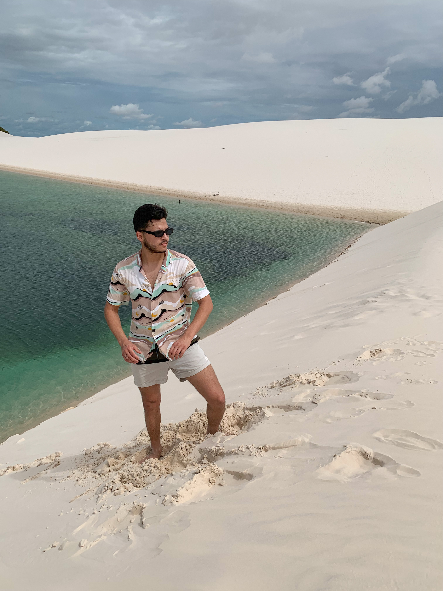

20 de março de 2023
Lençóis Maranhenses

O Parque Nacional dos Lençóis Maranhenses é uma área protegida na costa atlântica norte do Brasil. É conhecido pela sua vasta paisagem desértica de grandes dunas de areia branca e pelas lagoas sazonais de água da chuva. A Lagoa Azul e a Lagoa Bonita são duas das maiores lagoas.